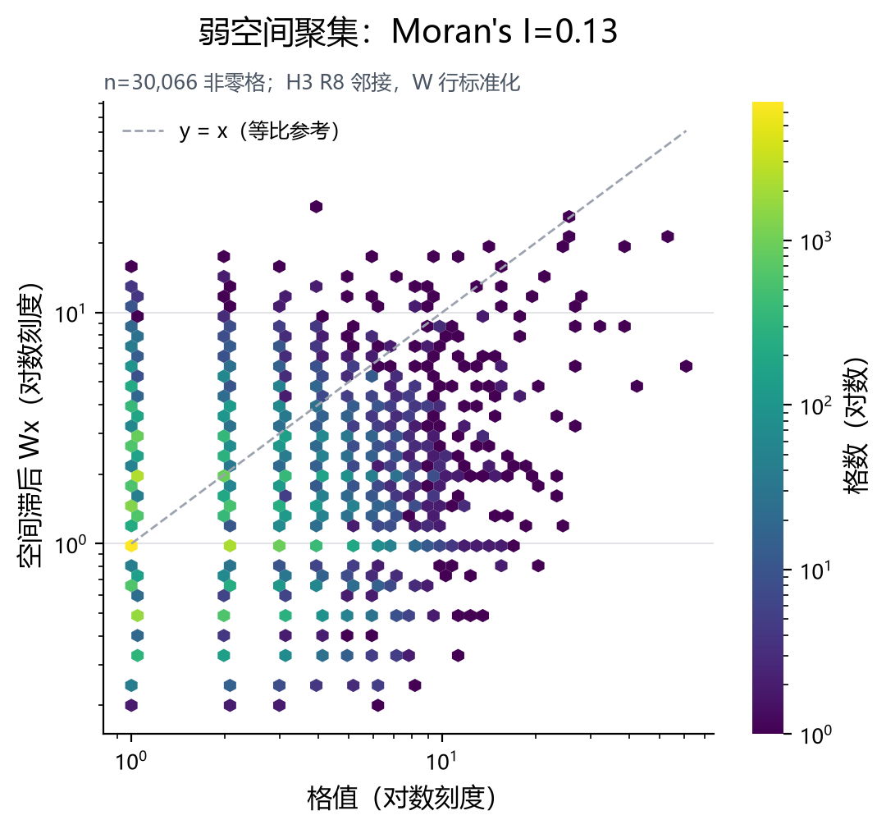
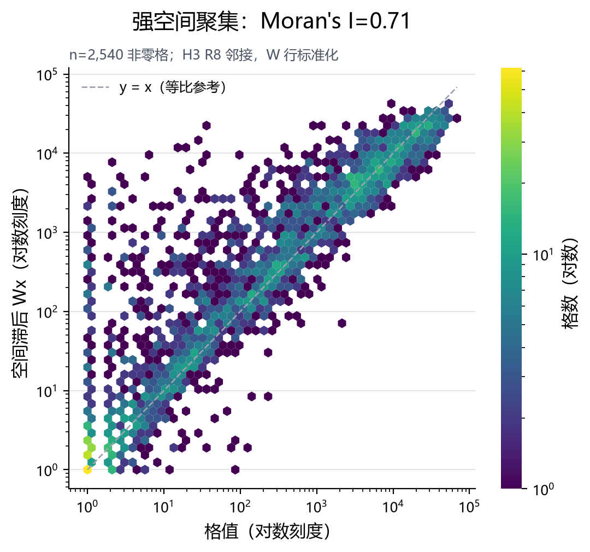
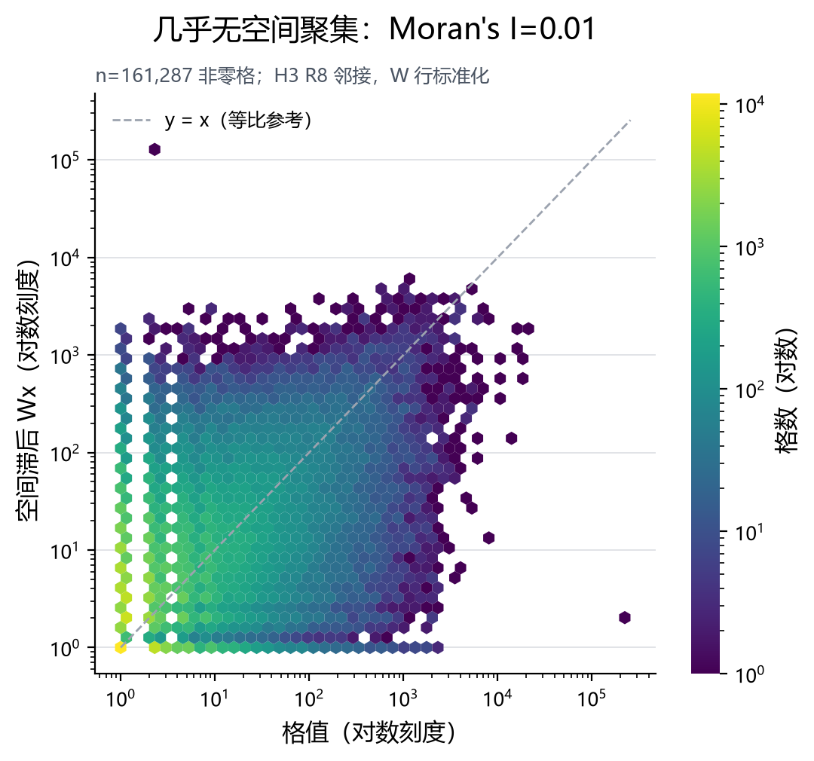
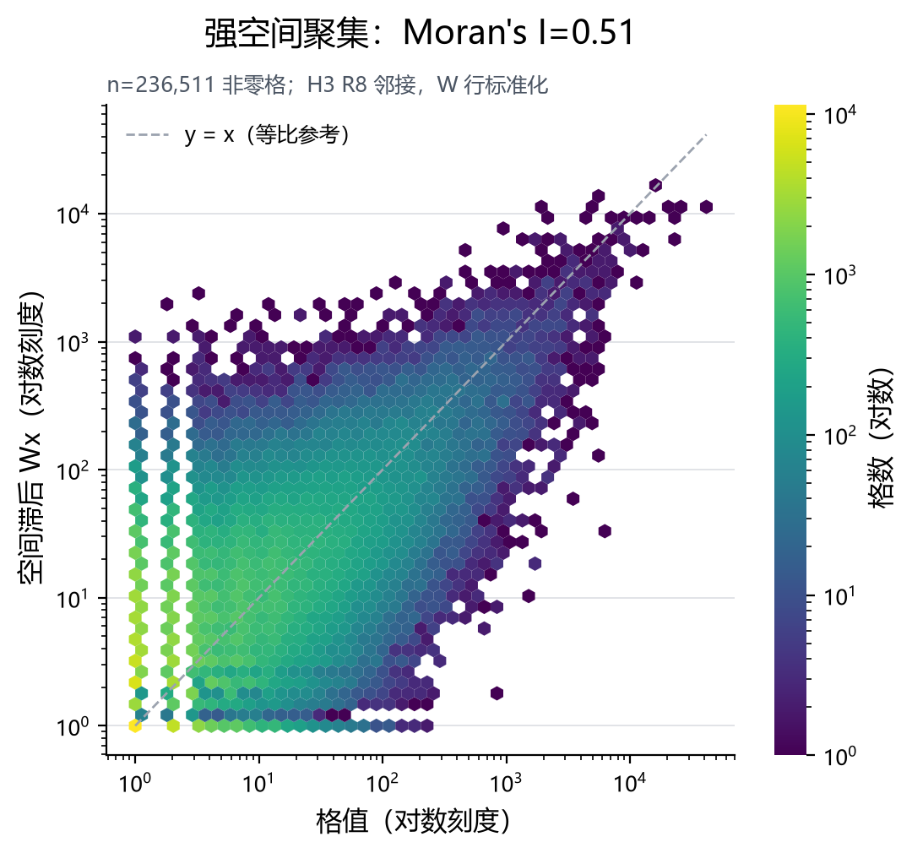

Moran's I 实验室 · 换一种邻居定义，结论就变了
横轴 = 格值，纵轴 = 空间滞后（邻居均值）；斜率就是 Moran's I。同一套管线跑四个数据集，I 差 54 倍。
Moran's I 是空间分析里最常被引用、也最常被误读的一个数。
它只回答一句话：高值是不是挨着高值、低值是不是挨着低值。
最强聚集0.7077深圳单车
最弱聚集0.0132Brightkite
极值倍数54×同一套管线
参与格总数604,173四数据集合计
怎么读 I：散点的四个象限
Moran 散点把「格值」放横轴、「邻居均值（空间滞后）」放纵轴，两轴都中心化后，
散点自然分成四象限：
LL低–低
我低、邻居也低 → 冷点，同样推高 I。
HL高–低
我是高峰、邻居是洼地 → 空间离群，压低 I。
I 的取值直觉I > 0 = 同值相邻（聚集）；I ≈ 0 = 随机；I < 0 = 高低交错（分散）。行标准化权重下，I 恰好等于 Moran 散点的最小二乘斜率 —— 所以散点图的斜率可以直接当 I 读。
动手看：Moran 散点
当前环境没有格级 CSV，散点面板已降级为静态图
可拨开关的交互散点需要 05_map/output/<ds>/L2_spatial_lag.csv；
该文件受仓库根 .gitignore 约束不入库，重跑 ⑤ 映射后本页会自动升级为
可切数据集 / 权重 / 尺度的交互版本。下面的散点是上游 ⑥ 阶段真实产出的 PNG，不是示意图。

FDIC 网点关闭：I = 0.1331，corr(格值, 滞后) = 0.2163，格数 70,456，孤岛率 28.1%

深圳共享单车：I = 0.7077，corr(格值, 滞后) = 0.8581，格数 2,661，孤岛率 4.5%

Brightkite 签到：I = 0.0132，corr(格值, 滞后) = 0.0266，格数 228,476，孤岛率 29.4%

Gowalla 签到：I = 0.5090，corr(格值, 滞后) = 0.7246，格数 302,580，孤岛率 21.8%
两个开关都会改变结论（本课重点）
开关一：换权重定义- 「邻居」是人为定义，不是客观事实：Queen 邻接（共享边）还是 KNN（最近 k 个）？
- 本管线的 L1 用 H3
grid_disk(k=1)，六边形满配 6 个邻居；实测平均邻居从 1.41（fdic）到 5.07（sz_bike）不等 —— 差的不是算法，是数据密不密。
开关二：换变量尺度- Moran's I 依赖变量尺度：把格值取 log1p 再算，I 会明显变化（长尾数据尤其如此）。
- 所以跨研究比较 I 必须同尺度、同权重、同网格；只报一个 I 不报口径，等于没报。
公式
全局 Moran's II = ( n / S₀ ) · ( zᵀWz ) / ( zᵀz ) 其中 z = x − x̄，S₀ = ΣᵢΣⱼ wᵢⱼ
行标准化后 Σⱼ wᵢⱼ = 1 ⇒ S₀ = n ⇒ I = ( zᵀWz ) / ( zᵀz ) = 散点斜率
想自己推一遍？取一个 4 格的玩具例子：值 [0, 0, 10, 10]，邻接成一条链、行标准化。手算 Wz 与 I，你会发现 I 落不到 1 —— 因为边界格邻居少，这正是「孤岛会稀释 I」的代数来源。